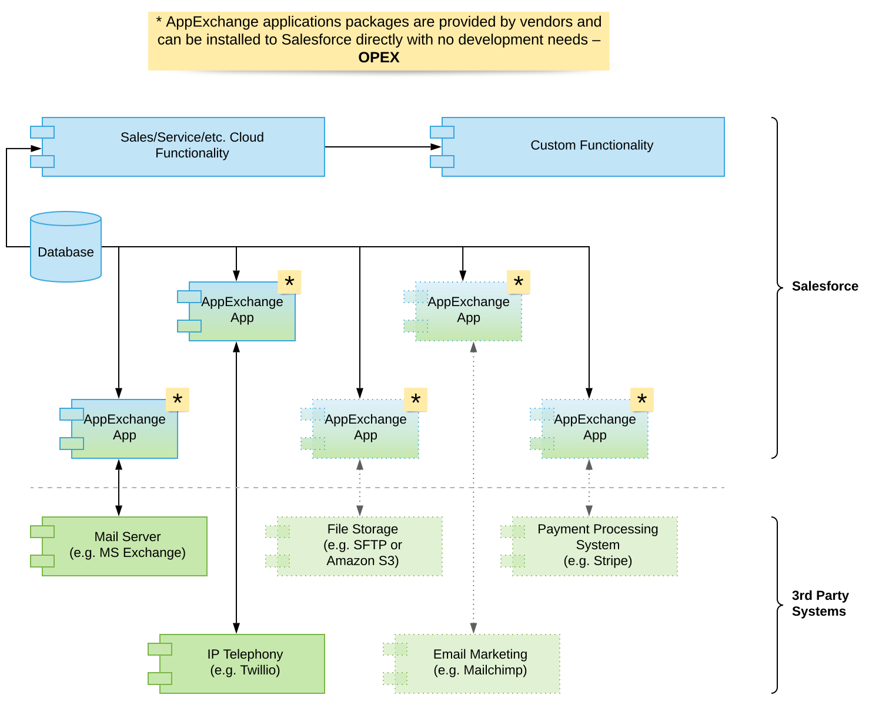
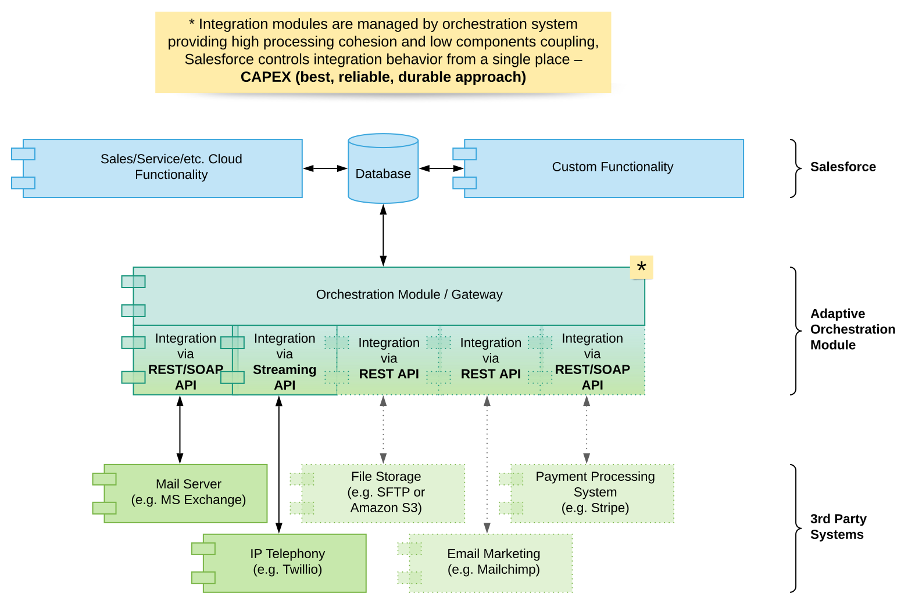

IMPLEMENTATION OF SALESFORCE: SELECTION OF CRM SYSTEM
(part 4 of 4)
Dmitri Leichik
CEO, medstifter af Twistellar
We are finishing a series of articles dedicated to Selection of CRM System. This is the 4th part of 4. Follow us on LinkedIn or Facebook so you won't miss a new article.
This is the concluding part of our Selection of CRM System series. We are going to talk about the integration capabilities of your future system which you have to analyze before starting an implementation project. And the difference between ERP and CRM systems and which one suits your business best.
Previously we've discussed all other factors of choosing a CRM system. If you haven't read those articles yet please start here:
Implementation of Salesforce
Implementation of Salesforce: Selection of CRM System. Part 1
Implementation of business automations is often accompanied by various prejudices and organizational challenges. Knowing and considering key decision factors significantly raises the chances of completing a successful IT project.
Implementation of Salesforce
Implementation of Salesforce: Selection of CRM System. Part 2
What does scalability look like from Salesforce perspective. What are the main challenges of switching your CRM to Salesforce in future. What impact the implementation and licenses cost
Implementation of Salesforce
Implementation of Salesforce: Selection of CRM System. Part 3
In this part we are going to discuss why Salesforce might not be a best fit for you in terms of simplicity and what are the maintenance costs.
Integration capabilities
In the majority of cases a CRM system is expected to work along with third-party systems. Besides a typical desire to integrate it with telephony and email service, there can be plenty of other integration tasks: accounting or ERP systems, data storages, marketing tools, payment gateways etc. In some cases the CRM is intended to be used more as a management hub, that orchestrates the data flow between existing systems, exposing information to employees and management, enriching customer data with operational and transactional records for real Customer 360 view and effective decision making.
So what are the considerations to select a platform from the integration capabilities perspective? There are two principal approaches to establish integration between a CRM and an external system - you either use an existing application for your CRM provided by a vendor, or create a custom integration of your own. The main difference between the approaches is that an app would most probably be a paid option, and you'll not fully control its functionality. It will be easier to set up and try, and probably will be able to satisfy your basic needs.
It's quite reasonable to follow that path, if it's available, prior to getting into a custom solution. Be aware that even in the most straightforward cases, when you would expect certain functionality from an existing Salesforce connector for an external system, it won't provide these functions due to some policies. The most typical example of such domains are social networks and messengers.
There are two principal approaches to establish integration between a CRM and an external system - you either use an existing application for your CRM provided by a vendor, or create a custom integration of your own.

A custom solution, on the contrary, relies on the capabilities of the CRM platform to support the needed ways of integration, provided by a third-party system, in a way specifically designed to your business flows. And the more flexible and powerful these capabilities are - the less constraints you will meet when creating a custom integration app. The solution will require some investment, but it will be a one-time expense, and will be fully controlled by you. Quite often, actually, that's the only path, as certain services are too flexible to create a ready-to-use app.

So, the existence of the ready-to-use integration apps for the services you're going to use together with a CRM, becomes an important factor of choosing a CRM itself. For certain markets that may become a weak point of Salesforce - those of them where some local services are too popular (for instance, a particular local accounting system) and do not have a native Salesforce integration. In this case you would like to look at a local CRM as well, which may cause long-going consequences.
However, even if you want to connect something that doesn't have a Salesforce connector, you can avoid sacrificing the power of a global CRM platform and build your custom integration. Salesforce supports all main API protocols (REST, SOAP) and allows all possible ways of setting integration, direct and middleware-based. If you'll meet any limitations for your integration that you'll have to overcome at all, they'll not be caused by Salesforce. In some of the most complicated cases in our practice we've integrated Salesforce with up to 19 third-party systems at once! And you can leverage different solutions (such as Mulesoft, mParticle, or others) if needed, to save time and cost and instead coding something completely custom, connect the systems using the integration platforms.
Implementation of Salesforce
FITTING SALESFORCE INTO EXISTING IT LANDSCAPE
Technological aspects of Salesforce integration capabilities are really miscellaneous – it supports a number of integration principles and can fit into almost any architecture. Bulk data uploads, single record sync, custom interfaces and event publishing – all these operations are supported by default and are automatically adjusted to be compatible with data structures already in use. Find out more about interfaces which cover the most component integration and data sync cases.
It's also quite reasonable to examine using a combination of existing connectors and custom integrations. It's the responsibility of an experienced technical architect to define the requirements and work out a stable and scalable solution that will satisfy your particular needs.
What's important to consider - from the perspective of minimization of risks and improving the overall stability, it's better to select the world leading systems for the functions you're going to integrate. Please consider that you'll need Enterprise Edition of Salesforce licenses to build custom integrations.
CRM or ERP
Sometimes we're approached by companies searching for an automation platform, who require ERP functionality, and due to traditional positioning of Salesforce, treat it as a pure CRM system, not capable of handling enterprise resource management.
Indeed, if we're talking about the comparison with historical leaders of ERP automations, such as SAP or Oracle, in Salesforce, and in other typical CRM competitors, you'll not find the pre-configured flows that would cover the requirements of your purchase, warehouse or equipment management processes, etc.
However, many companies that have already fully experienced the cumbersome process of modification of a "traditional" ERP system with all its internal dependencies, that impact the flexibility and speed of introducing new functions. And quite often all these complications of business logic of such systems are not used in real business processes of a company.
We've mentioned earlier that Salesforce provides a great flexibility of configuring its data model and automations, so that you can quite quickly set up a typical ERP flow, that will contain only the functionality you actually need, and will be tailored accurately to your business needs. It's a great alternative to trying to find a separate ERP system and integrate it with Salesforce, that's worth considering when you're going to implement ERP automation from scratch.
For instance, with such an approach we've designed implementation of the following flows in Salesforce from scratch: financial accounting, inventory management, purchasing and procurement, logistics, equipment booking and management, production management and many others, for various industries.
Medium-scale IT landscape
However, using a set of some "smaller" CRM and a separate ERP is also an option worth considering. Just please make sure that in such a case you're able to achieve the needed level of integration and that you properly define the data management policies. We've seen many cases when the crucial information is distributed among several systems, without having a definite source of truth.
Conclusion
In this article we've tried to present the factors for your consideration that, hopefully, will help you make a right decision for your own business case. Once again, correct selection of a technical platform is important, but usually not critical for a successful automation project. Much more crucial is the human factor. But you can avoid a lot of risks if you address the above listed technical considerations with full understanding of the consequences of your decisions.
Lad os tale sammen, og gennemgå hvad Salesforce kan gøre for jer.
Vi hos Twistellar vil altid med glæde hjælpe og rådgivejeres beslutning om at vælge Salesforce eller ej. Vores højeste prioritet er at i er tilfredse med jeres valg (uanset om det er for eller imod Salesforce).
Articles from the Salesforce Implementation series
Implementation of Salesforce:
(part 2 of 4)
Scalability
Category_1
Category_2
Implementering af Salesforce: Valg af CRM-system. Del 2
Skalerbarhed. Licenser og implementeringsomkostninger.
Har du lyst til at arbejde sammen med os her hos Twistellar? Vi er også spændte! Uanset om i ønsker at tilpasse jeres organisation, bygge en skræddersyet applikation, eller integrere et værktøj fra en tredjepart, står Twistellar klar til at hjælpe jer. Kontakt os, så vi kan gennemgå jeres Salesforce-ideer!